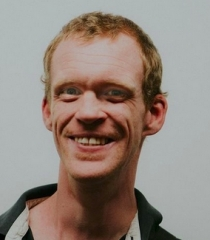

"Pour tout vous dire, j'ai une RQTH et comme mon handicap n'aime pas rester seul, il est toujours avec moi !
Ce qui ne m'empêche pas de savourer chaque instant de ma vie."
06.99.34.58.18
regis.nicolo@gmail.com
Code Académie : Juin 17 - Janvier 18 et Septembre 18 - Mai 19
Université Rennes 2 Haute Bretagne Sept.09 - Mars 12
Collectif Handicap 35 : Septembre 2011 à décembre 2011
Analyse des résultats d'une enquête sur le transport scolaire pour les personnes à mobilité réduite (département d'Ille et Vilaine):